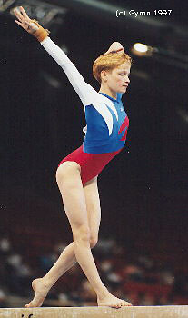

Elena Grosheva (RUS)
1996 Olympic Team Silver Medalist

Medal Total
Olympic Games: 1
Silver
World Championships: 1 Silver, 1 Bronze
Elena was born on April 12, 1979.
Competition Results
1993
European Youth Olympic Days: 2nd AA
Jr. European Championships: 20th AA
Massilia Gym Cup: 38th AA
Nikon International: 27th AA
RUS Championships: 4th AA, 2nd UB, 4th V, 6th B
RUS Cup: 20th AA
World Stars: 12th AA, 2nd UB
1994
Birmingham Classic: 5th AA
DTB Cup: 4th UB, 7th V
Goodwill Games: 3rd AA
Jr. European Championships: 5th AA, 4th B, 7th UB
RUS Championships: 12th AA, 2nd B, 3rd UB, 5th FX, 8th V
RUS Cup: 4th AA
World Championships (Brisbane): 12th AA
World Championships (Dortmund): 3rd Team
World Stars: 7th AA, 5th UB
1995
Atlanta Gymnastics Invitational (Pre-Olympics): 4th AA
Kosice International: 10th AA, 3rd UBG
RUS Championships: 4th AA, 2nd FX, 3rd UB
RUS Cup: 4th AA
Subway Gymnastics Challenge: 5th AA
World Championships: 4th Team, 21st AA, 7th V, 8th B
1996
Cottbus International: 2nd UB, 4th FX, 6th B, 7th V
Cup of Buratino: 3rd AA
DTB Cup: 3rd V, 4th FX, 5th UB
Gander Memorial: 5th AA
ITA-ROM-RUS-BLR: 6th AA
Olympic Games: 2nd Team, 7th V
RUS Championships: 4th AA, 3rd V, 3rd UB, 3rd B, 3rd FX"
RUS Cup: 2nd AA
Swiss Cup: 2nd FX, 3rd V, 6th B, 7th UB
1997
RUS Championships: 3rd AA
RUS Cup: 2nd V, 2nd B, 7th UB, 7th FX
World Championships: 2nd Team
World Stars: 2nd UB, 7th V, 7th FX
This page was created on August
13, 2005 and was last updated on January 03, 2007.
© Gymn Forum